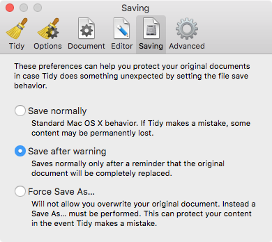
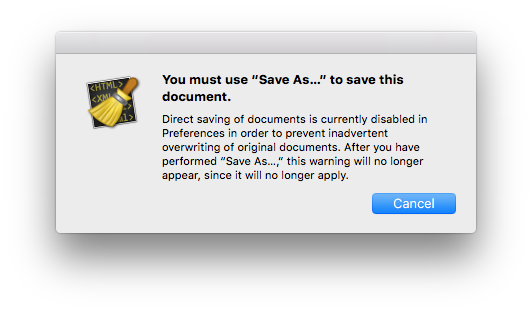
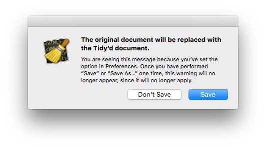

Saving
The Saving Preferences panel controls whether files are saved normally, saved normally after a one-time warning, or require you to Save As… before saving an opened file the first time.

Saving your document will replace the original document, and so, depending on the behavior set on this page, you may have to use the Save As… menu item in the File menu to save your document. If you attempt to save a document and see this message:

Or this message:

…then you can be sure that Balthisar Tidy is set to ensure against any possible data loss as a result of its work.
Data loss is very unlikely, but as Tidy is very, very strict it’s possible that it will remove content that it thinks is garbage. For this reason it’s always important to review the Tidy Messages table.